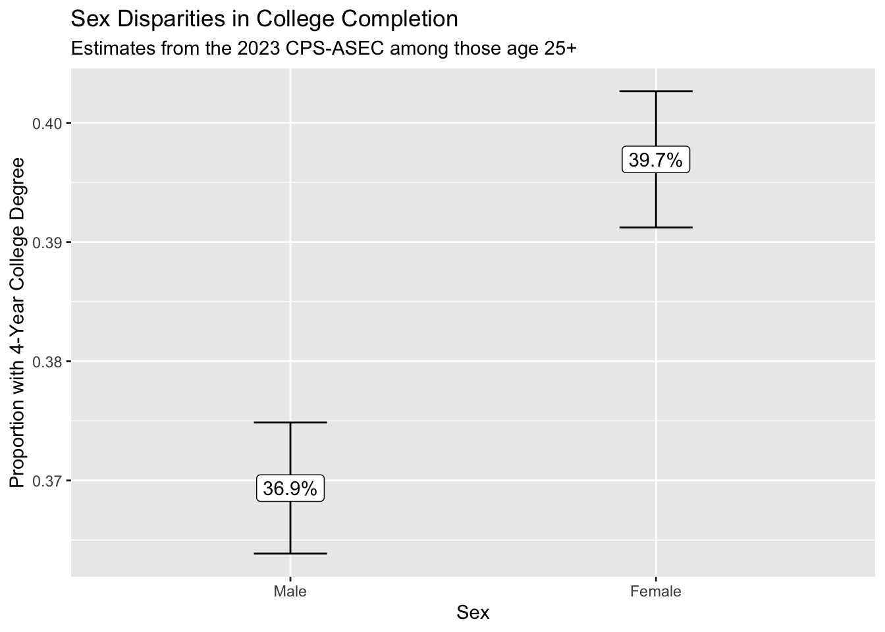

name weight employed
1 Luis 4 1
2 William 1 0
3 Susan 1 0
4 Ayesha 4 1Weights
When studying population-level inequality, our goal is to draw inference about all units in the population. We want to know about the people in the U.S., not just the people who answer the Current Population Survey. Drawing inference from a sample to a population is most straightforward for a simple random sample: when people are chosen at random with equal probabilities. For simple random samples, the sample average of any variable is an unbiased and consistent estimator of the population average.
But the Current Population Survey is not a simple random sample. Neither are most labor force samples! These samples still begin with a sampling frame, but people are chosen with unequal probabilities. We need sample weights to address this fact.
In the CPS, a key goal is to estimate unemployment in each state. Every state needs to have enough sample size—even tiny states like Wyoming. In order to make those estimates, the CPS oversamples people who live in small states.
An example: California and Wyoming
In 2022, California had 14,822 CPS-ASEC respondents out of a population of 39,029,342. Wyoming had 2,199 CPS-ASEC respondents out of 581,381 residents. The average probability that a CA resident was sampled was about 0.04 percent, whereas the same probability in WY was 0.4 percent. You are 10 times more likely to be sampled for the ASEC if you live in Wyoming.
To draw good population inference, our analysis must incorporate what we know about how the data were collected. If we ignore the weights, our sample will have too many people from Wyoming and too few people from California. Weights correct for this.
How survey designers create weights
To calculate sampling weight on person \(i\), those who design survey samples take the ratio \[\text{weight on unit }i = \frac{1}{\text{probability of including person }i\text{ in the sample}}\] You can think of the sampling weight as the number of population members a given sample member represents. If there are 100 people with a 1% chance of inclusion, then on average 1 of them will be in the sample. That person represents \(\frac{1}{.01}=100\) people.
Example redux: California and Wyoming
Suppose Californians are sampled with probability 0.0004. Then each Californian represents 1 / 0.0004 = 2,500 people. Each Californian should receive a weight of 2,500. Working out the same math for Wyoming, each Wyoming resident should receive a weight of 250. The total weight on these two samples will then be proportional to the sizes of these two populations.
In practice, weighting is more complicated: survey administrators adjust weights for differential nonresponse across population subgroups (a method called post-stratification). How to construct weights is beyond the scope of this course, and could be a whole course in itself!
Point estimates
When we download data, we typically download a column of weights. For simplicity, suppose we are given a sample of four people. The weight column tells us how many people in the population each person represents. The employed column tells us whether each person employed.
If we take an unweighted mean, we would conclude that only 50% of the population is employed. But with a weighted mean, we would conclude that 80% of the population is employed! This might be the case if the sample was designed to oversample people at a high risk of unemployment.
| Estimator | Math | Example | Result |
|---|---|---|---|
| Unweighted mean | \(=\frac{\sum_{i=1}^n Y_i}{n}\) | \(=\frac{1 + 0 + 0 + 1}{4}\) | = 50% employed |
| Weighted mean | \(=\frac{\sum_{i=1}^n w_iY_i}{\sum_{i=1}^n w_i}\) | \(=\frac{4*1 + 1*0 + 1*0 + 4*1}{4 + 1 + 1 + 4}\) | = 80% employed |
In R, the weighted.mean(x, w) function will calculate weighted means where x is an argument for the outcome variable and w is an argument for the weight variable.
Standard errors
As you know from statistics, our sample mean is unlikely to equal the population mean. There is random variation in which people were chosen for inclusion in our sample, and this means that across hypothetical repeated samples we would get different sample means! You likely learned formulas to create a standard errors, which quantifies how much a sample estimator would move around across repeated samples.
Unfortunately, the formula you learned doesn’t work for complex survey samples! Simple random samples (for which those formulas hold) are actually quite rare. When you face a complex survey sample, those who administer the survey might provide
- a vector of \(n\) weights for making a point estimate
- a matrix of \(n\times k\) replicate weights for making standard errors
By providing \(k\) different ways to up- and down-weight various observations, the replicate weights enable you to generate \(k\) estimates that vary in a way that mimics how the estimator might vary if applied to different samples from the population. For instance, our employment sample might come with 3 replicate weights.
name weight employed repwt1 repwt2 repwt3
1 Luis 4 1 3 5 3
2 William 1 0 1 2 2
3 Susan 1 0 3 1 1
4 Ayesha 4 1 5 3 4The procedure to use replicate weights depends on how they are constructed. Often, it is relatively straightforward:
- use
weightto create a point estimate \(\hat\tau\) - use
repwt*to generate \(k\) replicate estimates \(\hat\tau^*_1,\dots,\hat\tau^*_k\) - calculate the standard error of \(\hat\tau\) using the replicate estimates \(\hat\tau^*\). The formula will depend on how the replicate weights were constructed, but it will likely involve the standard deviation of the \(\hat\tau^*\) multiplied by some factor
- construct a confidence interval1 by a normal approximation \[(\text{point estimate}) \pm 1.96 * (\text{standard error estimate})\]
In our concrete example, the point estimate is 80% employed. The replicate estimates are 0.67, 0.73, 0.70. Variation across the replicate estimates tells us something about how the estimate would vary across hypothetical repeated samples from the population.
Computational strategy for replicate weights
Using replicate weights can be computationally tricky! It becomes much easier if you write an estimator() function. Your function accepts two arguments
datais thetibblecontaining the dataweight_nameis the name of a column containing the weight to be used (e.g., “repwt1”)
Example. If our estimator is the weighted mean of employment,
estimator <- function(data, weight_name) {
data |>
summarize(
estimate = weighted.mean(
x = employed,
# extract the weight column
w = sim_rep |> pull(weight_name)
)
) |>
# extract the scalar estimate
pull(estimate)
}In the code above, sim_rep |> pull(weight_name) takes the data frame sim_rep and extracts the weight variable that is named weight_name. There are other ways to do this also.
We can now apply our estimator to get a point estimate with the main sampling weight,
estimate <- estimator(data = sim_rep, weight_name = "weight")which yields the point estimate 0.80. We can use the same function to produce the replicate estimates,
replicate_estimates <- c(
estimator(data = sim_rep, weight_name = "repwt1"),
estimator(data = sim_rep, weight_name = "repwt2"),
estimator(data = sim_rep, weight_name = "repwt3")
)yielding the three estimates: 0.67, 0.73, 0.70. In real data, you will want to apply this in a loop because there may be dozens of replicate weights.
The standard error of the estimator will be some function of the replicate estimates, likely involving the standard deviation of the replicate estimates. Check with the data distributor for a formula for your case. Once you estimate the standard error, a 95% confidence interval can be constructed with a Normal approximation, as discussed above.
Application in the CPS
Starting in 2005, the CPS-ASEC samples include 160 replicate weights. If you download replicate weights for many years, the file size will be enormous. We illustrate the use of replicate weights with a question that can be explored with only one year of data: among 25-year olds in 2023, how did the proportion holding four-year college degrees differ across those identifying as male and female?
We first load some packages, including the foreach package which will be helpful when looping through replicate weights.
library(tidyverse)
library(haven)
library(foreach)To answer our research question, we download 2023 CPS-ASEC data including the variables sex, educ, age, the weight variable asecwt, and the replicate weights repwtp*.
cps_data <- read_dta("../data_raw/cps_00079.dta")We then define an estimator to use with these data. It accepts a tibble data and a character weight_name identifying the name of the weight variable, and it returns a tibble with two columns: sex and estimate for the estimated proportion with a four-year degree.
estimator <- function(data, weight_name) {
data |>
# Define focal_weight to hold the selected weight
mutate(focal_weight = data |> pull(weight_name)) |>
# Restrict to those age 25+
filter(age >= 25) |>
# Restrict to valid reports of education
filter(educ > 1 & educ < 999) |>
# Define a binary outcome: a four-year degree
mutate(college = educ >= 110) |>
# Estimate weighted means by sex
group_by(sex) |>
summarize(estimate = weighted.mean(
x = college,
w = focal_weight
))
}We produce a point estimate by applying that estimator with the asecwt.
estimate <- estimator(data = cps_data, weight_name = "asecwt")# A tibble: 2 × 2
sex estimate
<dbl+lbl> <dbl>
1 1 [male] 0.369
2 2 [female] 0.397Using the foreach package, we apply the estimator 160 times—once with each replicate weight—and use the argument .combine = "rbind" to stitch results together by rows.
library(foreach)
replicate_estimates <- foreach(r = 1:160, .combine = "rbind") %do% {
estimator(data = cps_data, weight_name = paste0("repwtp",r))
}# A tibble: 320 × 2
sex estimate
<dbl+lbl> <dbl>
1 1 [male] 0.368
2 2 [female] 0.396
3 1 [male] 0.371
4 2 [female] 0.400
5 1 [male] 0.371
6 2 [female] 0.397
7 1 [male] 0.369
8 2 [female] 0.397
9 1 [male] 0.370
10 2 [female] 0.398
# ℹ 310 more rowsWe estimate the standard error of our estimator by a formula \[\text{StandardError}(\hat\tau) = \sqrt{\frac{4}{160}\sum_{r=1}^{160}\left(\hat\tau^*_r - \hat\tau\right)^2}\] where the formula comes from the survey documentation. We carry out this procedure within groups defined by sex, since we are producing estimate for each sex.
standard_error <- replicate_estimates |>
# Denote replicate estimates as estimate_star
rename(estimate_star = estimate) |>
# Merge in the point estimate
left_join(estimate,
by = join_by(sex)) |>
# Carry out within groups defined by sex
group_by(sex) |>
# Apply the formula from survey documentation
summarize(standard_error = sqrt(4 / 160 * sum((estimate_star - estimate) ^ 2)))# A tibble: 2 × 2
sex standard_error
<dbl+lbl> <dbl>
1 1 [male] 0.00280
2 2 [female] 0.00291Finally, we combine everything and construct a 95% confidence interval by a Normal approximation.
result <- estimate |>
left_join(standard_error, by = "sex") |>
mutate(ci_min = estimate - 1.96 * standard_error,
ci_max = estimate + 1.96 * standard_error)# A tibble: 2 × 5
sex estimate standard_error ci_min ci_max
<dbl+lbl> <dbl> <dbl> <dbl> <dbl>
1 1 [male] 0.369 0.00280 0.364 0.375
2 2 [female] 0.397 0.00291 0.391 0.403We use ggplot() to visualize the result.
result |>
mutate(sex = as_factor(sex)) |>
ggplot(aes(
x = sex,
y = estimate,
ymin = ci_min,
ymax = ci_max,
label = scales::percent(estimate)
)) +
geom_errorbar(width = .2) +
geom_label() +
scale_x_discrete(
name = "Sex",
labels = str_to_title
) +
scale_y_continuous(name = "Proportion with 4-Year College Degree") +
ggtitle(
"Sex Disparities in College Completion",
subtitle = "Estimates from the 2023 CPS-ASEC among those age 25+"
)
We conclude that those identifying as female are more likely to hold a college degree. Because we can see the confidence intervals generated using the replicate weights, we are reasonably confident in the statistical precision of our point estimates.
Takeaways
- we use samples to learn about the population
- this often requires sample weights because of unequal inclusion probabilities
- point estimates are easy with functions like
weighted.mean() - standard errors are harder, but possible via replicate weights
- it can help to write an explicit
estimator()function that carries out all the steps to estimate the unknown population parameters
At the highest level, it is important to remember that our goal is to study the population—not the sample. When we understand how the sample was generated from the population, this makes it possible to draw the correct inferences about the population from the sample.
Footnotes
If we hypothetically drew many complex survey samples from the population in this way, an interval generated this way would contain the true population mean 95% of the time.↩︎